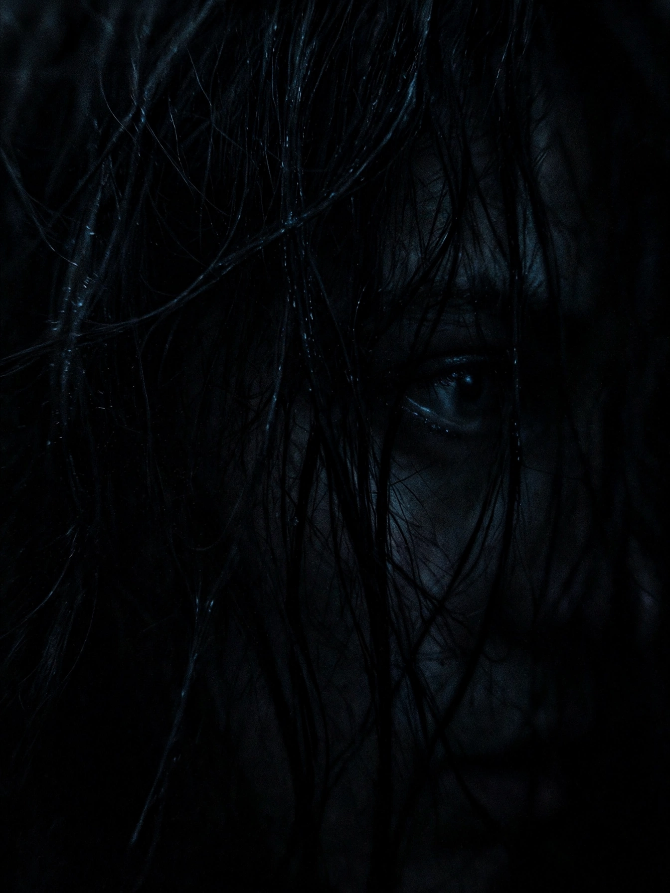

せいかくしんだん
あなたの性格を、
16タイプで診断します
全32問、すべて二択。当てはまる方を、直感で選んでください。
4つの軸から、あなたの性格の傾向を詳しく読み解きます。
あなたのことを、もっと知るための診断です。
※ 回答データが外部に送信されることはありません。
※ 結果はこの画面の中だけで表示されます。
1 / 32 問
QUESTION
RESULT
結果を集計しています
そのまま、少しだけお待ちください。
ここまでの暫定結果
22問の回答から、
ここまで見えています
最終結果ではありません。ここから残り10問で、精度を上げていきます。
いまの傾向
あなたのタイプは
----
タイプ解説
4つの軸
あなたの強み
気をつけたいこと
診断データ
回答にかかった平均時間-
いちばん迷った質問-
診断が終了した時刻-
結果を共有する
タイプコードの内訳
—— さきほどの4文字は、性格のコードではありませんでした。これは、迎えに行けるかどうかの内訳です。
さっきの場面で、起きたこと
あの質問たちは、何だったのか
診断中の「記録しました」を、読み直す
このページは閉じても大丈夫です。結果は、もう決まっています。
